<div class="monitoramento">
    <!-- <div class="visao">
        
        <fa-icon [icon]="faTable"></fa-icon>
    </div> -->
    <div id="3d-graph"></div>
    <app-loading *ngIf="loading"></app-loading>
    <router-outlet></router-outlet>
    <div class="logo">
        
    </div>
    <aside class="legenda">
        <div class="legenda-critico">
            <p>Estado crítico</p>
            <div class="status status-down">
                <span></span>
                <p *ngFor="let item of dataStatusDanger" (click)="selectNode(item)">{{item.name}}</p>
            </div>
        </div>
        <div class="legenda-status" >
            <p>Legenda</p>
            <div class="status status-ok">
                <span></span>
                <p>Ok</p>
            </div>
            <div class="status status-warning">
                <span></span>
                <p>Pausado por dependencias</p>
            </div>
            <div class="status status-down">
                <span></span>
                <p>Parado</p>
            </div>
        </div>
    </aside>
</div>